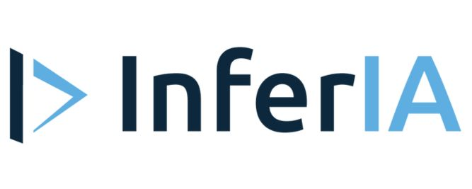

Ingeniero de Software
InferIA
Diseño la capa de datos de un asistente conversacional con IA sobre WhatsApp y una web abierta (arquitectura RAG híbrida), orientado a dar acceso a los recursos de salud y bienestar de un municipio.
tecnologías
responsabilidades
- Diseño del modelo de datos sobre PostgreSQL, PostGIS y pgvector para información heterogénea: lugares geolocalizados, horarios y eventos que cambian en el tiempo, y contenido para búsqueda semántica.
- Modelado de horarios recurrentes, temporadas y excepciones, para que el asistente responda con exactitud según la fecha y la hora.
- Planificación de la recolección de múltiples fuentes de datos públicas, priorizadas según su frecuencia de actualización y su complejidad técnica.
- Diseño del proceso de ingesta: trazabilidad de cada dato hasta su origen, detección de duplicados y actualización incremental.
- Puesta en marcha del entorno de base de datos con Docker y definición de las convenciones de trabajo del repositorio.